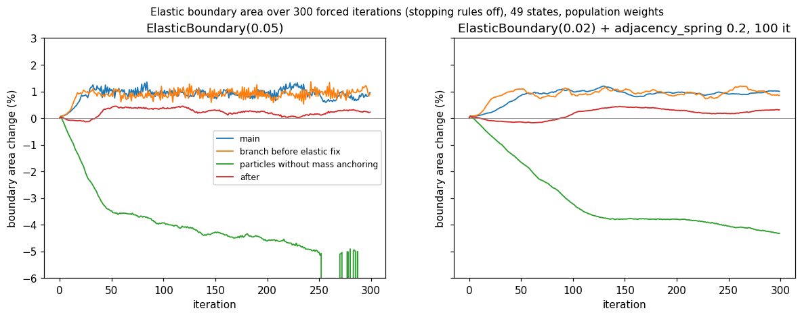
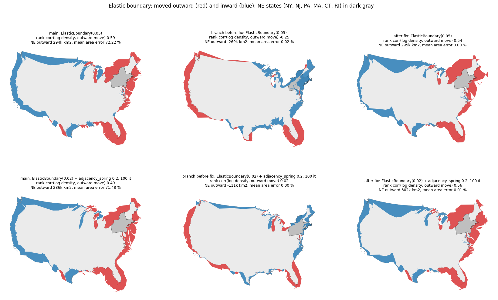
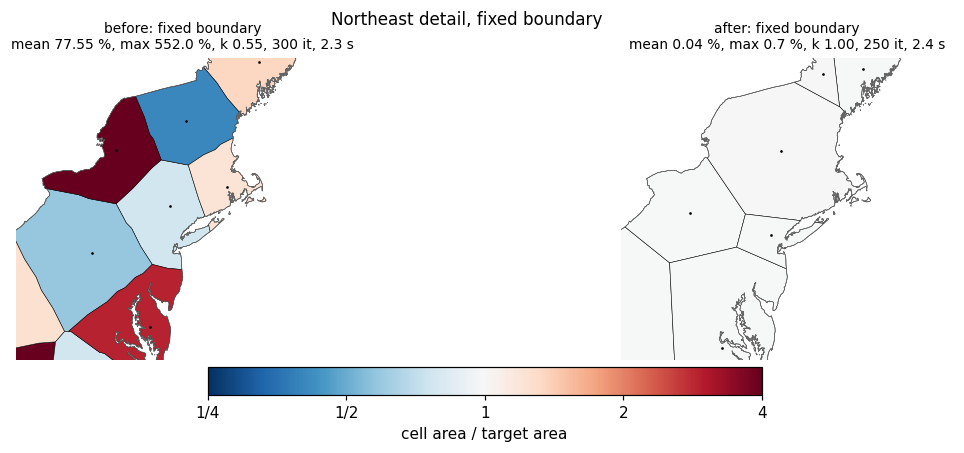
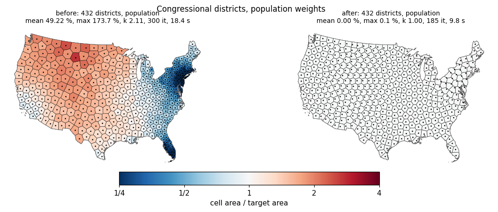
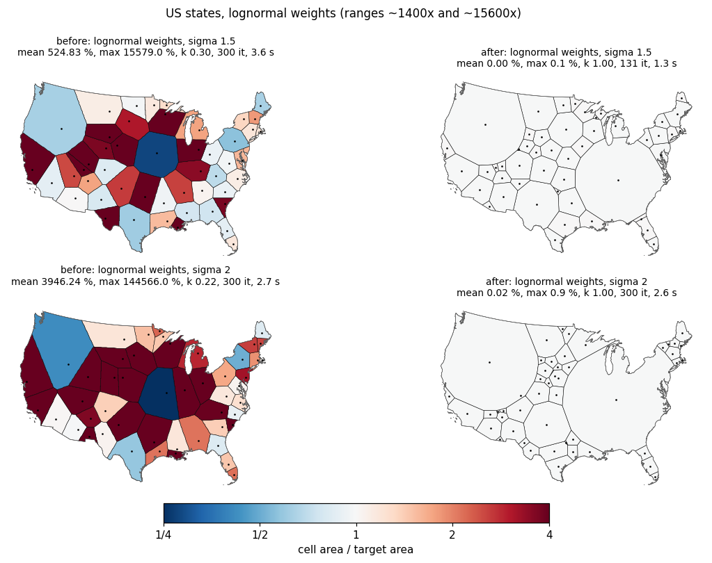
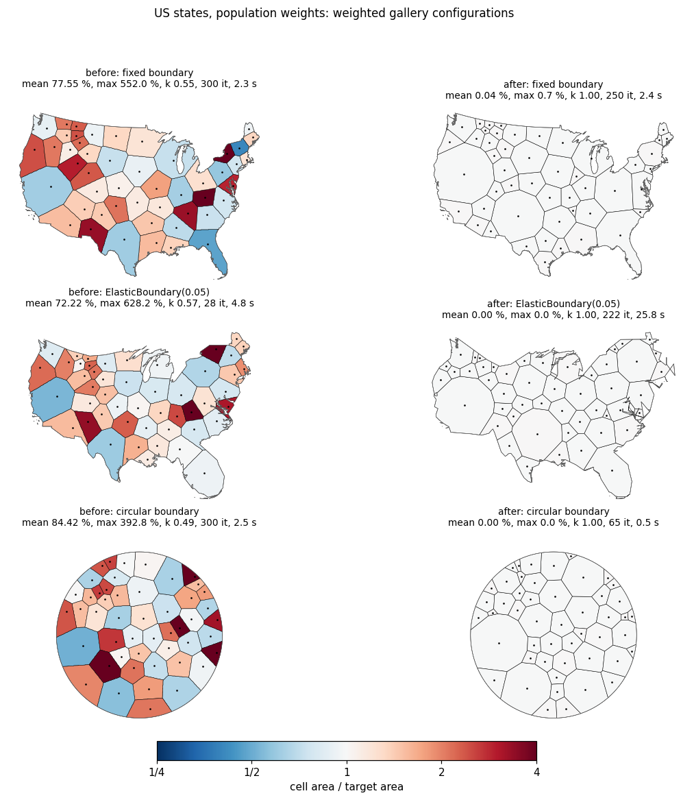

With weights, RasterBackend cells are now straight-edged power-diagram cells whose areas match the weight-proportional targets (mean error 72-84 % on main, 0.00-0.04 % now on the 49 states); weighted runs above the new area_error_tol are reported as not converged; the elastic boundary is driven by the advected input density.
weights and euclidean labeling, RasterBackend assigns pixels by the power distance |x - p_i|^2 - lambda_i instead of |x - p_i|^2 / w_i. Cell borders are straight lines; each cell is the intersection of half-planes (convex before clipping to the boundary).area_equalizer_rate, default 0.1). They also leak while the generators are still far from their cell centroids; without that leak the offsets oscillate on inputs with many clustered generators (432 districts).VoronoiOptions.area_error_tol (new, default 0.01) of its weight-proportional share of the final boundary area. It starts from the relaxation's offsets and needs 2-5 area evaluations.area_error_tol are reported as converged=False with a RuntimeWarning (for example ExactBackend and distance_mode="geodesic", which still ignore weights). Unweighted runs are unchanged: positions, cells and metrics hash identically to main on seven unweighted configurations (the elastic one differs from main only by the run-to-run noise that main also shows).Mean and max are |area / target - 1| of the output polygons; k is the slope of log area against log weight (1.0 is proportional); "it" is the number of iterations; times are wall-clock seconds on one machine (the runtime printed on the first "before" panel, 0.0 s, is not reliable; a separate run took 4.2 s).
| case | weight range | mean before | max before | k before | mean after | max after | k after | it before / after | s before / after | converged before / after |
|---|---|---|---|---|---|---|---|---|---|---|
| fixed boundary | 68x | 77.6 % | 552 % | 0.55 | 0.04 % | 0.69 % | 1.00 | 300 / 250 | 4.2 / 2.8 | False / True |
| ElasticBoundary(0.05) | 68x | 72.2 % | 628 % | 0.57 | 0.00 % | 0.002 % | 1.00 | 28 / 222 | 5.6 / 25.8 | True / True |
| gallery: ElasticBoundary(0.02) + adjacency_spring 0.2 | 68x | 71.5 % | 519 % | - | 0.006 % | 0.07 % | 1.00 | - / 100 | 10.6 / 10.4 | - |
| circular boundary | 68x | 84.4 % | 393 % | 0.49 | 0.00 % | 0.003 % | 1.00 | 300 / 65 | 2.7 / 0.6 | False / True |
| lognormal sigma 1.5 | 1399x | 525 % | 15579 % | 0.30 | 0.004 % | 0.09 % | 1.00 | 300 / 131 | 3.7 / 1.5 | False / True |
| lognormal sigma 2 | 15646x | 3946 % | 144566 % | 0.22 | 0.02 % | 0.89 % | 1.00 | 300 / 300 | 2.8 / 2.8 | False / False |
| 432 districts, population | 2x | 49.2 % | 174 % | 2.11 | 0.00 % | 0.05 % | 1.00 | 300 / 185 | 17.9 / 11.0 | False / True |
"converged False" for sigma 2 means the area_cv_tol stopping rule did not fire within 300 iterations; the output areas are within tolerance and no warning is raised.
With weights the boundary should move outward near states whose weight share exceeds their area share (NY, NJ, PA, MA, CT, RI) and inward near sparse states (MT, ND, WY). "Rank corr" is the Spearman correlation between log(weight share / area share) and the outward-minus-inward boundary area within 150 km of each of the 34 coastal states; "NE outward" is the same area summed over NY, NJ, PA, MA, CT and RI.
| configuration | main: rank corr / NE outward | branch before the fix: rank corr / NE outward | after the fix: rank corr / NE outward |
|---|---|---|---|
| ElasticBoundary(0.05) | 0.59 / +294k km2 | -0.25 / -269k km2 | 0.54 / +295k km2 |
| ElasticBoundary(0.02) + adjacency_spring 0.2 (gallery) | 0.49 / +286k km2 | 0.02 / -111k km2 | 0.56 / +302k km2 |
Per state after the fix, ElasticBoundary(0.05), outward displacement in km: NY +510, NJ +416, PA +184, MA +457, CT +301, RI +680 (between -430 and -1000 before the fix); MT -696 (main -428), ND -539 (main -345), ID -261, WY -155, SD -138.
The boundary keeps its initial area within 0.4 % (main: +1 %; see the next section). In the ElasticBoundary(0.05) configuration the push is slightly weaker than on main; in the gallery configuration it is stronger. That run takes about 220 iterations before the stopping rule fires (75 before the elastic fixes), about 12.5 s after the speed-up below; the gallery configuration takes about 4 s. The figures were generated at 671f7b0; the speed-up commit does not change results at fixed iteration counts.
The first particle-driven version shrank the boundary by 4 to 5 % and, in long runs, collapsed it. Two causes:
_deform_boundary's slow rebuild path, make_valid of a self-intersecting mainland ring returns a GeometryCollection of a MultiPolygon, a MultiLineString and a MultiPoint, and the loop kept only items of type Polygon, so the mainland was dropped. It now keeps every polygonal part. This bug exists on main too and appears only when a ring self-intersects in that way, which long elastic runs make likely.Boundary area change over 300 forced iterations: ElasticBoundary(0.05): main about +1.0 %, first particle version -4.8 % at iteration 250 and then the collapse, now +0.0 to +0.4 % (final +0.05 %). Gallery configuration: main +1.0 %, first particle version -4.3 %, now -0.1 to +0.4 %.
49 states, population weights, resolution 256, NUMBA_NUM_THREADS=8, numba warm, wall time of create_voronoi_cartogram. "Before" is 671f7b0, "after" is 02c94c9 (vectorized ring advection and rebuild, make_valid only on invalid rings, union only of overlapping parts, sliver-hole check only on parts with holes, single-threaded FFT plan).
| run | before | after |
|---|---|---|
| ElasticBoundary(0.05), 100 iterations | 10.6 s | 4.9 s |
| gallery (ElasticBoundary(0.02) + spring 0.2), 100 iterations | 10.0 s | 4.0 s |
| gallery, 300 iterations | 29.6 s | 13.7 s |
| ElasticBoundary(0.05), to convergence (area_cv_tol 0.05) | 18.4 s (183 it) | 12.5 s (222 it) |
| fixed boundary, 100 iterations | 1.1 s | 1.2 s |
At fixed iteration counts the results are unchanged: final boundaries identical (symmetric difference 0), generators within 2e-15 cell radii, weighted cells within 1e-12 of their area. The iteration count at convergence differs between runs because of the existing run-to-run noise of the elastic kernels. Remaining cost per elastic iteration (about 37 ms): the overlap query of the boundary parts, make_valid of the self-intersecting mainland ring, the union of overlapping parts and the generator clamp.
The multithreaded FFTW plan used before took about 100 ms per velocity solve on this 256 x 164 grid (2 ms single-threaded); the flow cartogram chooses its own FFT thread count and is not affected. The first call in a fresh environment compiles the numba displacement kernels, which are cached (cache=True); the FFT velocity solve itself uses no numba.
Measured on every configuration above plus resolution 128 and 512, AdhesiveBoundary(0.3), the main gallery example (ElasticBoundary(0.02), adjacency_spring 0.2) and districts with lognormal sigma 1.5 weights:
shapely.coverage_is_valid holds (no gaps or overlaps), the cell areas sum to the boundary area, no cell is empty.tests/test_voronoi_cartogram.py::TestWeightedPowerCells (11 tests, about 25 s together, all fail on main; the elastic-direction test also fails on the branch before the fix): 1 % mean error on the states with population weights (union and circle boundary) plus the power-cell, convexity and coverage checks; ElasticBoundary(0.05); weights spanning 1399x; custom area_error_tol; reporting of a failed solve; ExactBackend and geodesic labeling with weights reported as not converged; no gate for unweighted runs; option validation. The new elastic test checks (49 states, ElasticBoundary(0.05), resolution 128, 60 iterations) that the boundary moves outward next to NY, NJ, MA, CT and RI and inward next to MT, ND and WY, that the coastal rank correlation exceeds 0.5, that the mean area error is at most 1 %, and that the final boundary area is within 2 % of the original. The voronoi test file (65 tests) and the full suite (804 tests) pass; pre-commit and mypy pass.
Regenerate the figures with uv run python make_figures.py from a carto-flow checkout of the branch (it exports main @ 0124245 with git archive for the "before" half; set BEFORE_REF to override).

Boundary area relative to the original over 300 forced iterations (main, the cell-driven branch, the first particle version, the current version) for both elastic configurations.

Boundary displacement, main / branch before the fix / after the fix, for both elastic configurations; the northeastern states are highlighted.

Northeast, fixed boundary: curved multiplicatively weighted borders before, straight power-diagram borders after.

432 congressional districts with population weights (about 2x range).

Lognormal weights spanning about 1400x (sigma 1.5) and 15600x (sigma 2).

The three weighted gallery configurations (fixed boundary, ElasticBoundary(0.05), circular boundary): cells colored by area / target, black dots are the generators. After: all cells white (on target) with straight edges.